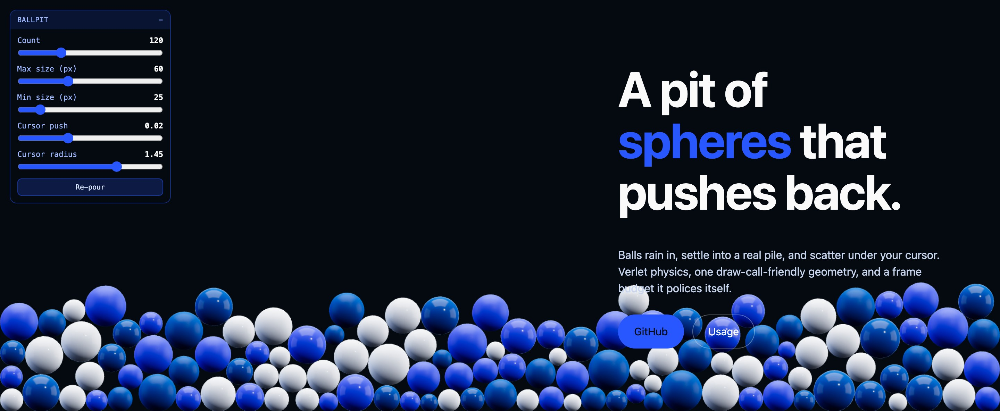

Why it exists
Most decorative hero backgrounds are a looping video or a shader: pretty, but nothing happens when you touch them. This one is a small physics world. The balls stack on each other, hold their shape, and remember where you shoved them — so a visitor has something to fiddle with instead of scrolling straight past.
Built for ozdalgic.com and pulled out into a library afterwards.
One function
No canvas framework to learn and no physics engine to bundle. Point it at a container element and it fills it.
Real contacts
Verlet integration with positional relaxation over a uniform-grid broadphase — cost scales with ball count, not its square.
Sizes in pixels
Diameters are CSS pixels and are re-derived on every resize, so a 60 px ball stays 60 px whatever the viewport does.
Polices its own frames
It times real frames and sheds balls if the median runs past your budget. Deterministic seed, so the pour is identical every load.
Install
Not on npm yet — install from the repository:
npm install github:ozdalgic/ballpit-js three
Or copy src/ballpit.js into your project; it is a single
module with three.js as its only dependency.
Use it
import { createBallpit } from 'ballpit-js';
createBallpit(document.querySelector('#hero-pit'), {
count: 180,
palette: ['#eaf1ff', '#2957ff', '#00509f'],
});The container needs a size of its own — the canvas fills it:
#hero-pit { position: absolute; inset: 0; z-index: 0; }Without a build step
The module imports the bare specifier three, so a bundler
resolves it for you. Otherwise, an import map does the same job — this
page uses exactly that:
<script type="importmap">
{
"imports": {
"three": "https://cdn.jsdelivr.net/npm/three@0.181.2/build/three.module.js"
}
}
</script>Options
| Option | Default | What it does |
|---|---|---|
| count | 180 | How many balls. Absolute, not a density — see Sizing. |
| minSize / maxSize | 25 / 60 | Ball diameters in CSS pixels, re-derived whenever the container resizes. |
| palette | 3 blues | Colours cycled across the balls. Each gets a glossy and a frosted material. |
| gravity | 11 | Downward acceleration in world units/s². |
| drift | 0 | Sideways acceleration. Negative makes the pile lean and re-gather to the left. |
| pointer.radius | 1.45 | Size of the invisible disc the cursor drags through the pile (~157 px). |
| pointer.strength | 0.02 | Shove budget per step. See Tuning the cursor. |
| envIntensity | 0.45 | Environment reflection. Raise for wetter, more mirror-like balls. |
| specular / clearcoat | 0.3 / 0.12 | Grazing-angle reflectance and the coat on top of it. |
| maxPixelRatio | 1.5 | DPR cap. The retina pass is the single biggest fragment cost. |
| autoQuality | true | Shed balls if frames run long. See Performance. |
| budgetMs | 8 | The frame cost that counts as “too slow”. |
| seed | 20260907 | Fixed, so the pour is identical on every load. |
| respectReducedMotion | true | Render one settled frame instead of animating. |
| controls | false | Show the built-in tuning panel. |
| labels | English | Panel strings, for translating the UI. |
API
const pit = createBallpit(el, options);
pit.setCount(240); // add or remove balls; new ones rain in
pit.setSizes(20, 45); // min/max diameter in CSS px
pit.repour(); // replay the opening pour
pit.destroy(); // remove listeners, dispose GPU resources, drop the canvas
pit.canvas; // the <canvas> element
controls: true gives you sliders for count, sizes and
the cursor, plus a re-pour button. Useful while you dial a design
in — or keep it, it works fine as a toy for visitors.
Sizing
count is a number of balls, not a density. The same value
reads as a shallow bed in a wide hero and a deep drift in a narrow
one, so pick it against your own container:
| Container | Reads as |
|---|---|
| ~1400 × 640 | 120 — a bed roughly two balls deep |
| ~1900 × 580 | 180 — the same depth across a wider hero |
| ~2500 × 610 | 180 — sparser, closer to a single layer |
Tuning the cursor
pointer.strength is a hard cap on how far one ball may be
displaced in a single step. It has to be re-tuned when the packing
changes, and the useful range is narrow:
-
Too high and a single drag bulldozes the whole bed into a mound —
and with
drift: 0nothing ever undoes that. - Too low and a densely packed pile simply absorbs the push: neighbour contacts cancel it out within the same step and nothing visibly moves.
The default (0.02, with radius: 1.45) shoves
nearby balls a few widths aside and leaves the bed's shape intact
across repeated drags. Measured against 180 balls in a 1900 × 580
container.
Performance
Everything shares one sphere geometry and a handful of materials. Measured on an M4 Max, step + render per frame:
| Balls | ms / frame | Share of a 60 fps budget |
|---|---|---|
| 120 | 0.22 | 1% |
| 180 | 0.39 | 2% |
| 400 | 0.77 | 5% |
Those are one machine's numbers. A weak integrated GPU will be several
times slower, and the fragment cost — not the physics — is what bites.
autoQuality therefore times the real frames and drops to
60% of the balls if the median exceeds budgetMs. If you
expose the count slider to visitors, the safety net stands down as
soon as they touch it: their choice wins.
Accessibility
prefers-reduced-motion: reducerenders a single settled frame instead of animating.- The pit is decorative — give the container
aria-hidden="true"and keep real content in normal DOM above it. - The canvas never takes pointer events from your content; it tracks the cursor from
windowinstead.
Browser support
Any browser with WebGL2 and ES modules. If WebGL is unavailable,
createBallpit warns and returns a no-op controller rather
than throwing, so the page is unaffected.